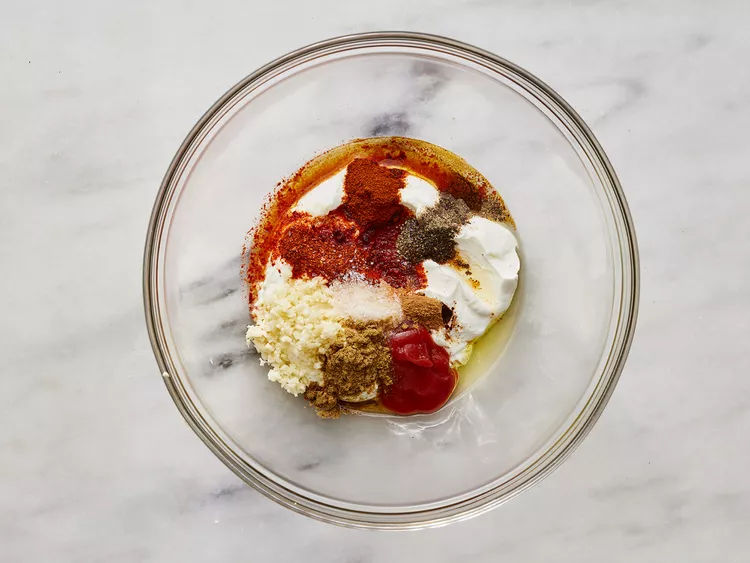
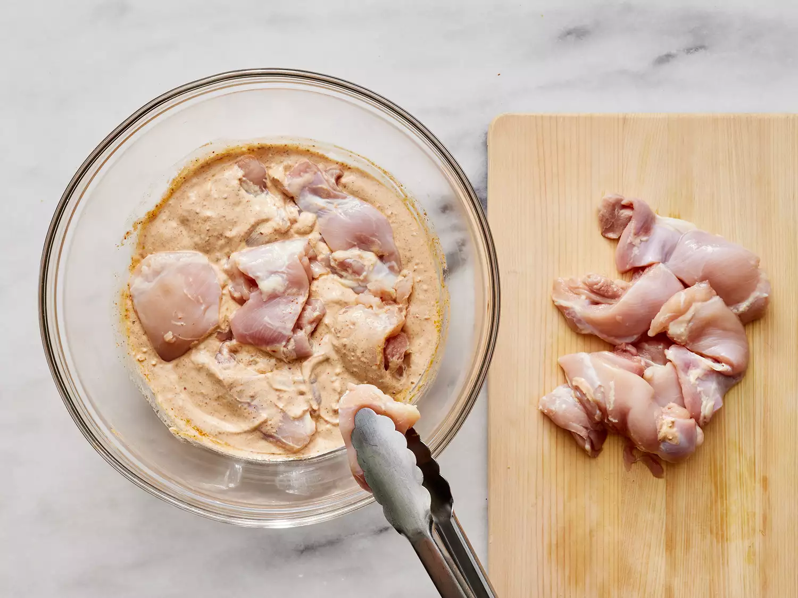
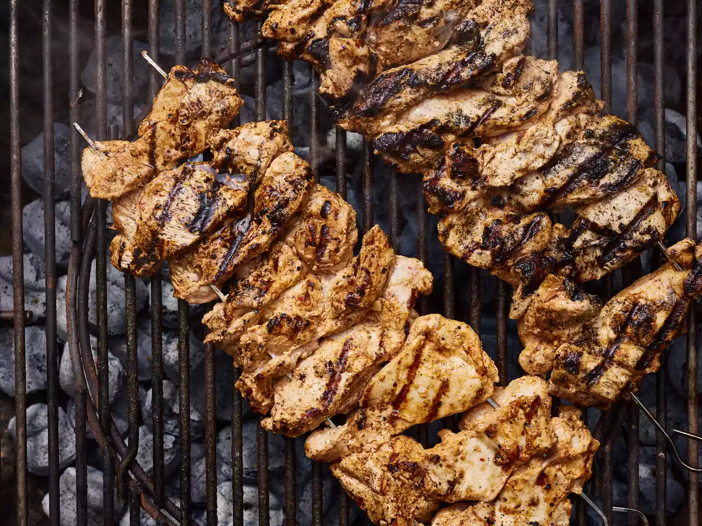

Ingredients
- 1 cup whole-milk Greek yogurt
- 2 tablespoons olive oil
- 1 teaspoon freshly ground black pepper
- 1 teaspoon paprika
- Salt
- Chicken
Directions
Step1
Whisk yogurt, garlic, olive oil, lemon juice, ketchup, red pepper flakes, salt, cumin, black pepper, paprika, and cinnamon together in a large bowl.
Step2
Place chicken thigh halves into the yogurt marinade and coat them thoroughly on all sides. Cover the bowl with plastic wrap and refrigerate, 2 to 8 hours.
Step3
Preheat an outdoor grill for medium-high heat and lightly oil the grate.
Step4
Using 2 skewers for each kebab, thread half of the chicken thighs onto each pair of skewers making a fairly thick "log" shape.
Step5
Place kebabs on the preheated grill. Do not try to turn them until they begin to unstick from the grill, 3 or 4 minutes. Turn kebabs and grill the other side for 3 to 4 minutes. Continue cooking and turning until chicken is no longer pink in the center, about 6 minutes more. An instant-read thermometer inserted into the center should read at least 165 degrees F (74 degrees C).
Step6
Place kebabs on the preheated grill. Do not try to turn them until they begin to unstick from the grill, 3 or 4 minutes. Turn kebabs and grill the other side for 3 to 4 minutes. Continue cooking and turning until chicken is no longer pink in the center, about 6 minutes more. An instant-read thermometer inserted into the center should read at least 165 degrees F (74 degrees C).